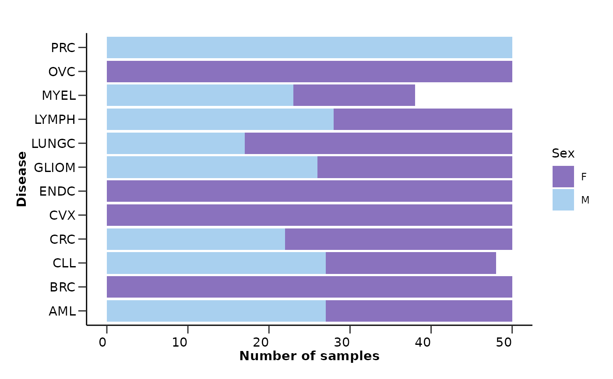
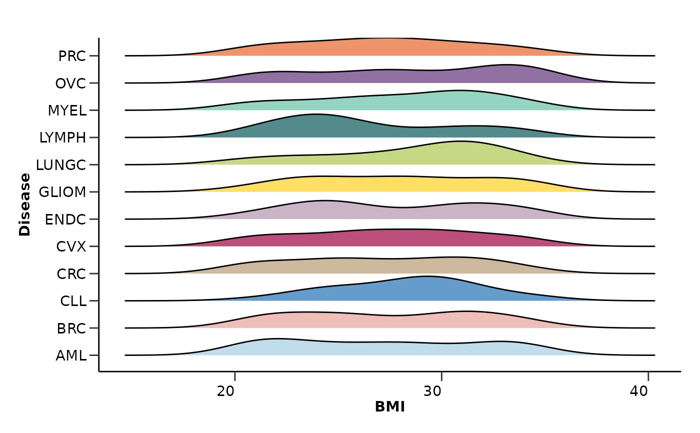
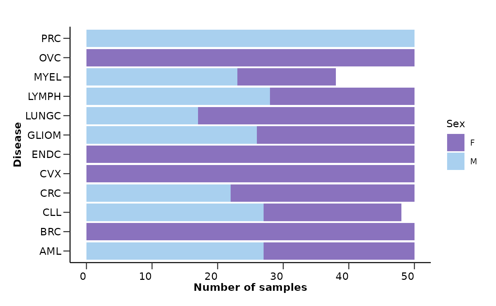
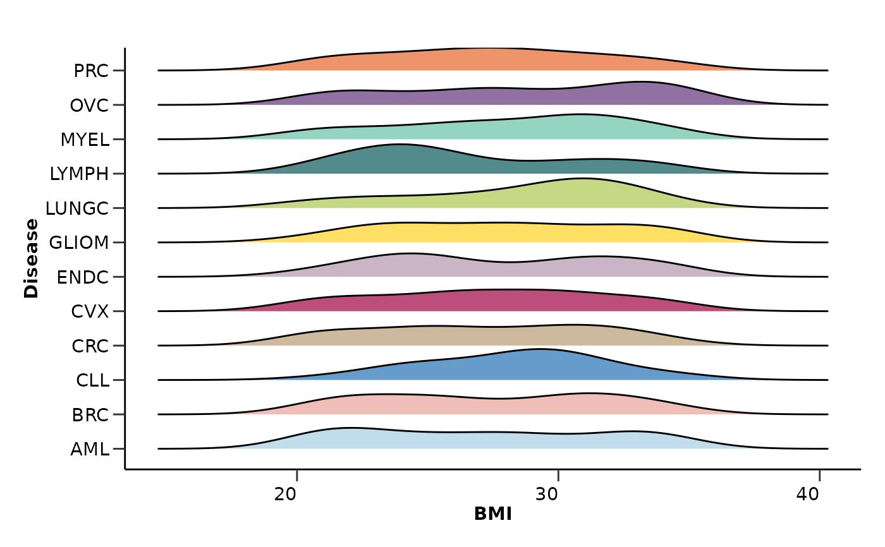

hd_qc_summary() summarizes the quality control results of the input data and metadata.
It returns general information about the datasets, missing value information,
protein-protein correlations, and metadata summary visualizations.
Usage
hd_qc_summary(
dat,
metadata = NULL,
variable,
palette = NULL,
unique_threshold = 5,
cor_threshold = 0.8,
cor_method = "pearson",
verbose = TRUE
)Arguments
- dat
An HDAnalyzeR object or a dataset in wide format and sample ID as its first column.
- metadata
A dataset containing the metadata information with the sample ID as the first column. If a HDAnalyzeR object is provided, this parameter is not needed.
- variable
The name of the metadata variable (column) containing the different classes (for example the column that contains your case and control groups).
- palette
A list of color palettes for the plots. The names of the list should match the column names in the metadata. Default is NULL.
- unique_threshold
The threshold to consider a numeric variable as categorical. Default is 5.
- cor_threshold
The threshold to consider a protein-protein correlation as high. Default is 0.8.
- cor_method
The method to calculate the correlation. Default is "pearson". Other options are "spearman" and "kendall".
- verbose
Whether to print the summary. Default is TRUE.
Examples
# Create the HDAnalyzeR object providing the data and metadata
hd_object <- hd_initialize(example_data,
example_metadata |> dplyr::select(-Sample))
# Run the quality control summary
qc_res <- hd_qc_summary(hd_object,
variable = "Disease",
palette = list(Disease = "cancers12", Sex = "sex"),
cor_threshold = 0.7,
verbose = TRUE)
#> [1] "Summary:"
#> [1] "Note: In case of long output, only the first 10 rows are shown. To see the rest display the object with view()"
#> [1] "Number of samples: 586"
#> [1] "Number of variables: 101"
#> [1] "--------------------------------------"
#> [1] "categorical : 1"
#> [1] "continuous : 100"
#> [1] "--------------------------------------"
#> [1] "NA percentage in each column:"
#> # A tibble: 91 × 2
#> column na_percentage
#> <chr> <dbl>
#> 1 ACE2 6.1
#> 2 ACTA2 6.1
#> 3 ACTN4 6.1
#> 4 ADAM15 6.1
#> 5 ADAMTS16 6.1
#> 6 ADH4 6.1
#> 7 AKR1C4 6.1
#> 8 AMBN 6.1
#> 9 AMN 6.1
#> 10 AOC1 6.1
#> # ℹ 81 more rows
#> [1] "--------------------------------------"
#> [1] "NA percentage in each row:"
#> # A tibble: 144 × 2
#> DAid na_percentage
#> <chr> <dbl>
#> 1 DA00450 57.4
#> 2 DA00482 53.5
#> 3 DA00542 53.5
#> 4 DA00003 50.5
#> 5 DA00463 46.5
#> 6 DA00116 43.6
#> 7 DA00475 42.6
#> 8 DA00578 42.6
#> 9 DA00443 41.6
#> 10 DA00476 35.6
#> # ℹ 134 more rows
#> [1] "--------------------------------------"
#> [1] "Protein-protein correlations above 0.7:"
#> Protein1 Protein2 Correlation
#> 1 ATP5IF1 AIFM1 0.76
#> 2 AXIN1 ARHGEF12 0.76
#> 3 AIFM1 ATP5IF1 0.76
#> 4 ARHGEF12 AXIN1 0.76
#> 5 ARHGEF12 AIFM1 0.71
#> 6 AIFM1 ARHGEF12 0.71
#> [1] "--------------------------------------"
#> [1] "Summary:"
#> [1] "Note: In case of long output, only the first 10 rows are shown. To see the rest display the object with view()"
#> [1] "Number of samples: 586"
#> [1] "Number of variables: 8"
#> [1] "--------------------------------------"
#> [1] "categorical : 6"
#> [1] "continuous : 2"
#> [1] "--------------------------------------"
#> [1] "NA percentage in each column:"
#> # A tibble: 1 × 2
#> column na_percentage
#> <chr> <dbl>
#> 1 Grade 91.5
#> [1] "--------------------------------------"
#> [1] "NA percentage in each row:"
#> # A tibble: 536 × 2
#> DAid na_percentage
#> <chr> <dbl>
#> 1 DA00001 12.5
#> 2 DA00002 12.5
#> 3 DA00003 12.5
#> 4 DA00004 12.5
#> 5 DA00005 12.5
#> 6 DA00006 12.5
#> 7 DA00007 12.5
#> 8 DA00008 12.5
#> 9 DA00009 12.5
#> 10 DA00010 12.5
#> # ℹ 526 more rows
#> [1] "--------------------------------------"
# Data summary -------------------------------------------------------------
qc_res$data_summary$na_col_hist
#> `stat_bin()` using `bins = 30`. Pick better value with `binwidth`.
 qc_res$data_summary$na_row_hist
#> `stat_bin()` using `bins = 30`. Pick better value with `binwidth`.
qc_res$data_summary$na_row_hist
#> `stat_bin()` using `bins = 30`. Pick better value with `binwidth`.
 qc_res$data_summary$cor_results
#> Protein1 Protein2 Correlation
#> 1 ATP5IF1 AIFM1 0.76
#> 2 AXIN1 ARHGEF12 0.76
#> 3 AIFM1 ATP5IF1 0.76
#> 4 ARHGEF12 AXIN1 0.76
#> 5 ARHGEF12 AIFM1 0.71
#> 6 AIFM1 ARHGEF12 0.71
qc_res$data_summary$cor_heatmap
qc_res$data_summary$cor_results
#> Protein1 Protein2 Correlation
#> 1 ATP5IF1 AIFM1 0.76
#> 2 AXIN1 ARHGEF12 0.76
#> 3 AIFM1 ATP5IF1 0.76
#> 4 ARHGEF12 AXIN1 0.76
#> 5 ARHGEF12 AIFM1 0.71
#> 6 AIFM1 ARHGEF12 0.71
qc_res$data_summary$cor_heatmap
 # Metadata summary ---------------------------------------------------------
qc_res$metadata_summary$na_col_hist
#> `stat_bin()` using `bins = 30`. Pick better value with `binwidth`.
# Metadata summary ---------------------------------------------------------
qc_res$metadata_summary$na_col_hist
#> `stat_bin()` using `bins = 30`. Pick better value with `binwidth`.
 qc_res$metadata_summary$na_row_hist
#> `stat_bin()` using `bins = 30`. Pick better value with `binwidth`.
qc_res$metadata_summary$Age
#> Picking joint bandwidth of 6.06
qc_res$metadata_summary$na_row_hist
#> `stat_bin()` using `bins = 30`. Pick better value with `binwidth`.
qc_res$metadata_summary$Age
#> Picking joint bandwidth of 6.06
 qc_res$metadata_summary$Sex

qc_res$metadata_summary$BMI
#> Picking joint bandwidth of 1.77

qc_res$metadata_summary$Stage
qc_res$metadata_summary$Sex

qc_res$metadata_summary$BMI
#> Picking joint bandwidth of 1.77

qc_res$metadata_summary$Stage
 qc_res$metadata_summary$Grade
qc_res$metadata_summary$Cohort
qc_res$metadata_summary$Grade
qc_res$metadata_summary$Cohort